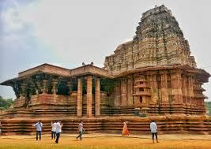
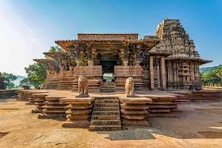

Location: Yadagirigutta, near Hyderabad, Telangana
Deity: Lord Narasimha (incarnation of Vishnu), also called Yadagiri Lakshmi Narasimha Swamy
Architecture: Recently renovated with stunning Dravidian architecture using black granite
Yadadri Narasimha Temple Details
Modern Renovation: Rebuilt and expanded massively between 2016–2022 under the Telangana government
Spiritual Significance: Considered a powerful temple for wish fulfillment and devotional healing
Structure: Built on a hill with beautifully sculpted pillars, mandapams, and vimanas
Pilgrimage Site: Popular temple attracting lakhs of devotees annually
Festival: Brahmotsavam is the grand annual celebration
Ramappa Temple


Location: Palampet village, Mulugu district, Telangana
Deity: Lord Shiva (as Ramalingeswara)
Built By: Recherla Rudra, a Kakatiya general, in 1213 AD during Ganapati Deva’s reign
Ramappa Temple Details
UNESCO World Heritage Site: Recognized in 2021 for architectural brilliance
Architecture: Built with sandbox technology (quake-resistant foundation), unique floating bricks used in the roof, intricate carvings on pillars and walls
Highlights: Detailed sculpture work depicting scenes from Ramayana and Mahabharata